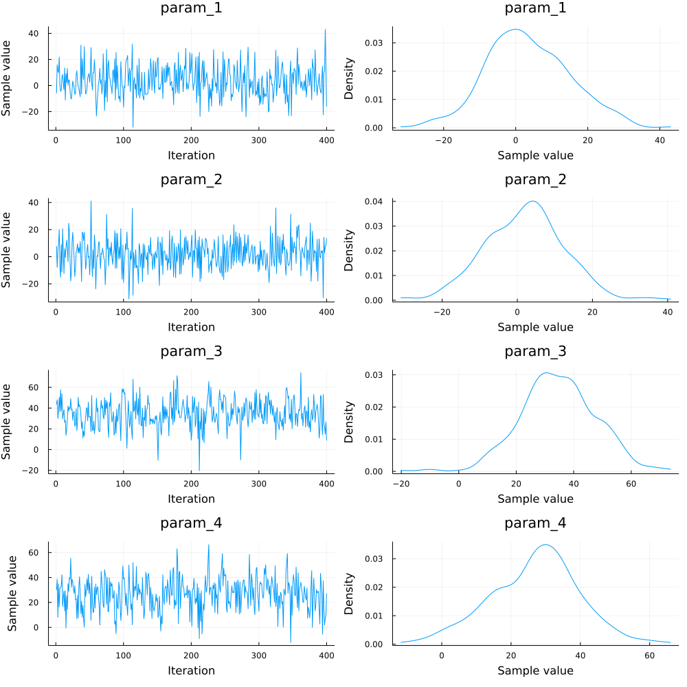
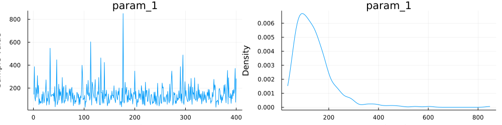

using CSV, StatsModels, DataFrames, NextGPdata = CSV.read("YOURPATH/phenotypes.csv",DataFrame)ID Sire Dam Herds Pen BW
QGG5 QGG1 QGG2 1 1 35.0
QGG6 QGG3 QGG2 1 2 20.0
QGG7 QGG4 QGG6 1 2 25.0
QGG8 QGG3 QGG5 1 1 40.0
QGG9 QGG1 QGG6 2 1 42.0
QGG10 QGG3 QGG2 2 2 22.0
QGG11 QGG3 QGG7 2 2 35.0
QGG12 QGG8 QGG7 3 2 34.0
QGG13 QGG9 QGG2 3 1 20.0
QGG14 QGG3 QGG6 3 2 40.0pedigree = "YOURPATH/pedigreeBase.txt""YOURPATH/pedigreeBase.txt"#Pedigree for the above example
QGG1 0 0
QGG2 0 0
QGG3 0 0
QGG4 0 0
QGG5 QGG1 QGG2
QGG6 QGG3 QGG2
QGG7 QGG4 QGG6
QGG8 QGG3 QGG5
QGG9 QGG1 QGG6
QGG10 QGG3 QGG2
QGG11 QGG3 QGG7
QGG12 QGG8 QGG7
QGG13 QGG9 QGG2
QGG14 QGG3 QGG6f = @formula(BW ~ Herds + Pen + ran(ID, ID) + ran(Dam,ID) + ran(Dam, Dam))FormulaTerm
Response:
BW(unknown)
Predictors:
Herds(unknown)
Pen(unknown)
(ID)->ran(ID, ID)
(Dam,ID)->ran(Dam, ID)
(Dam)->ran(Dam, Dam)myHints = Dict(:Dam => StatsModels.FullDummyCoding(),:ID => StatsModels.FullDummyCoding(),:Herds => StatsModels.DummyCoding(),:Pen => StatsModels.FullDummyCoding())Dict{Symbol, AbstractContrasts} with 4 entries:
:Pen => FullDummyCoding()
:ID => FullDummyCoding()
:Herds => DummyCoding(nothing, nothing)
:Dam => FullDummyCoding()blk = [("Herds","Pen")]1-element Vector{Tuple{String, String}}:
("Herds", "Pen")# later the writing will be simplified
priorVar = Dict(("ID","ID") => ("A",150),
("Dam","ID") => ("A",90),
("Dam","Dam") => ([],40),
"e"=> ([],350))Dict{Any, Tuple{Any, Int64}} with 4 entries:
("Dam", "Dam") => (Any[], 40)
"e" => (Any[], 350)
("Dam", "ID") => ("A", 90)
("ID", "ID") => ("A", 150)runGibbs(f,data,5000,1000,10;myHints=myHints,blockThese=blk,VCV=priorVar,userPedData=pedigree)[32mMCMC progress... 100%|███████████████████████████████████| Time: 0:08:32[39m
outMCMC has been created to store the MCMC output
Building parts of MME
Herds is Term type
Pen is Term type
(ran(ID,ID)) is ran Type
sym1: ID sym2: ID
(ran(Dam,ID)) is ran Type
sym1: Dam sym2: ID
(ran(Dam,Dam)) is ran Type
sym1: Dam sym2: Dam
number of markers: Any[]
("Herds", "Pen")
priorVCV structure for ("ID", "ID") is A, computed A matrix will be used
priorVCV structure for ("Dam", "ID") is A, computed A matrix will be used
priorVCV structure for ("Dam", "Dam") is empty, an identity matrix will be used
e is univariate
number of regions: Any[]postMCMC_b = summaryMCMC("b",summary=true)Chains MCMC chain (400×4×1 Array{Float64, 3}):
Iterations = 1:1:400
Number of chains = 1
Samples per chain = 400
parameters = param_1, param_2, param_3, param_4
Summary Statistics
mean std naive_se mcse ess rhat
param_1 3.4966 11.5168 0.5758 0.5996 367.7749 1.0019
param_2 1.9941 10.6965 0.5348 0.4786 514.1442 0.9991
param_3 34.6249 13.1674 0.6584 0.8944 196.3730 0.9996
param_4 26.9112 12.8549 0.6427 1.0136 199.1124 1.0003...............

postMCMC_u = summaryMCMC("varU",summary=true)Chains MCMC chain (400×3×1 Array{Float64, 3}):
Iterations = 1:1:400
Number of chains = 1
Samples per chain = 400
parameters = param_1, param_2, param_3
Summary Statistics
mean std naive_se mcse ess rhat
param_1 96.1806 82.0867 4.1043 4.1074 306.2494 1.0005
param_2 66.2353 65.5439 3.2772 4.7650 300.4542 0.9992
param_3 29.0011 28.2076 1.4104 1.4688 346.3286 1.0012................

postMCMC_e = summaryMCMC("varE",summary=true)Chains MCMC chain (400×1×1 Array{Float64, 3}):
Iterations = 1:1:400
Number of chains = 1
Samples per chain = 400
parameters = param_1
Summary Statistics
mean std naive_se mcse ess rhat
param_1 142.1475 86.5155 4.3258 3.7103 426.5393 1.0002..............
